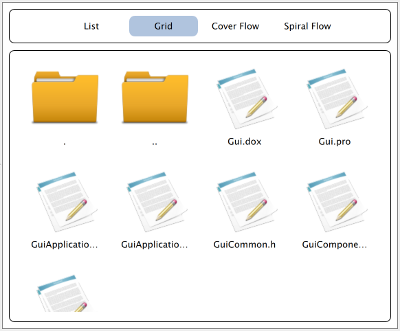

Table of Contents
This program showcases the use of GCFQuick3 module to build component based QML applications. Rover is a simple file/folder browser application written using GCFGui3, QtGui and QtQuick modules. You can view contents of a file/folder in list, grid, cover-flow and spiral views. While list and grid views are offered by the base Rover application, spiral and cover-flow views come from loadable components. The whole point of this demo is to whocase a way to bring QtGui and QtQuick modules together into a single component-based GCFGui3 application.
This page does not explain the source code of the example. We encourage you to study the source code to get a sense of how GCFQuick3 module can be leveraged in your applications.
Launching Rover
Launch the Transfigure application from the $GCFDIR/Binary/Demos folder. You will notice a window as shown below.
You can expand to any folder on the left-tree-panel and view the contents of that folder in the panel on the right. The panel on the right is a QQuickView. You can switch between List, Grid, Cover Flow and Spiral Flow views by selecting the appropriate tab on the top.
As said before, the List and Grid views come from the base Rover application. The Cover-Flow and Spiral-Flow views come from loadable components. Take a look at the contents of the $GCFDIR/Binary/Demos folder.
./Rover ./RoverComponents ./RoverComponents/libCoverFlowView.dylib ./RoverComponents/libSpiralFlowView.dylib
Notice how the cover-flow and spiral-flow views are made available from loadable components. The components are explicitly loaded by the RoverApp from its main() function.
This part is being highlighted as much, because it demonstrates a way for QML items to come from shared libraries and merge at run-time.
Various views

|

| ||

|

|